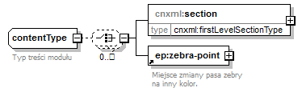
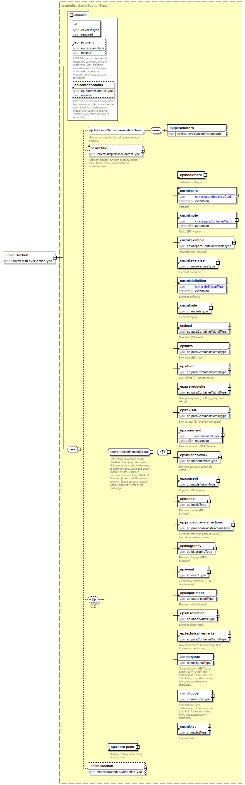

| diagram |  | ||
| namespace | http://cnx.rice.edu/cnxml | ||
| children | cnxml:section ep:zebra-point | ||
| used by |
|
||
| annotation |
|
||
| source | <xs:complexType name="contentType"> <xs:annotation> <xs:documentation>Typ treści modułu</xs:documentation> </xs:annotation> <xs:choice minOccurs="0" maxOccurs="unbounded"> <xs:element name="section" type="cnxml:firstLevelSectionType"/> <xs:element ref="ep:zebra-point"/> </xs:choice> </xs:complexType> |
| diagram |  | ||||||||||||||||||||||||||||
| namespace | http://cnx.rice.edu/cnxml | ||||||||||||||||||||||||||||
| type | cnxml:firstLevelSectionType | ||||||||||||||||||||||||||||
| properties |
|
||||||||||||||||||||||||||||
| children | ep:parameters cnxml:title ep:bookmark cnxml:para cnxml:note cnxml:example cnxml:exercise cnxml:definition cnxml:rule ep:lead ep:intro ep:effect ep:prerequisite ep:revisal ep:command ep:student-work ep:concept ep:tooltip ep:procedure-instructions ep:biography ep:event ep:experiment ep:observation ep:technical-remarks cnxml:quote cnxml:code cnxml:list ep:zebra-point cnxml:section | ||||||||||||||||||||||||||||
| attributes |
|
||||||||||||||||||||||||||||
| source | <xs:element name="section" type="cnxml:firstLevelSectionType"/> |